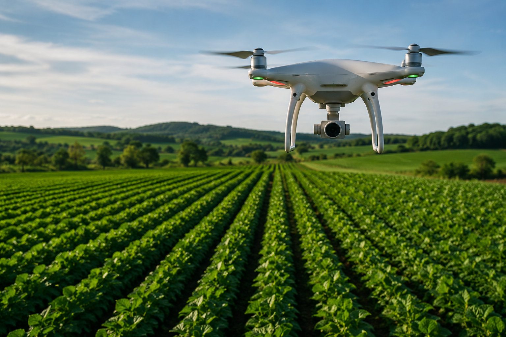
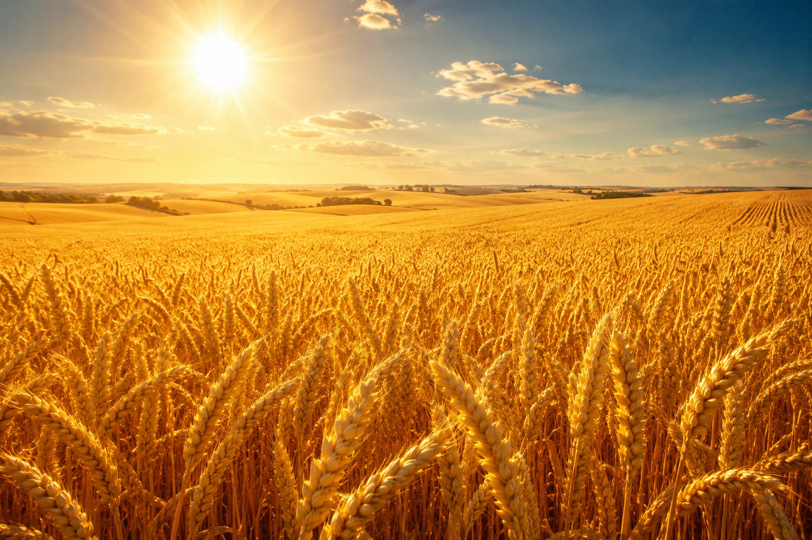

Tecnologia
Uso de drones e inteligência artificial para otimizar recursos naturais.
O equilíbrio perfeito entre a alta produtividade e a preservação do meio ambiente.

Uso de drones e inteligência artificial para otimizar recursos naturais.

Técnicas modernas de manejo que protegem ativamente o solo e as fontes de água.

Alimento de alta qualidade gerado com pegada de carbono drasticamente reduzida.
Selecione a técnica mais utilizada na sua produção para medir o nível de sustentabilidade: